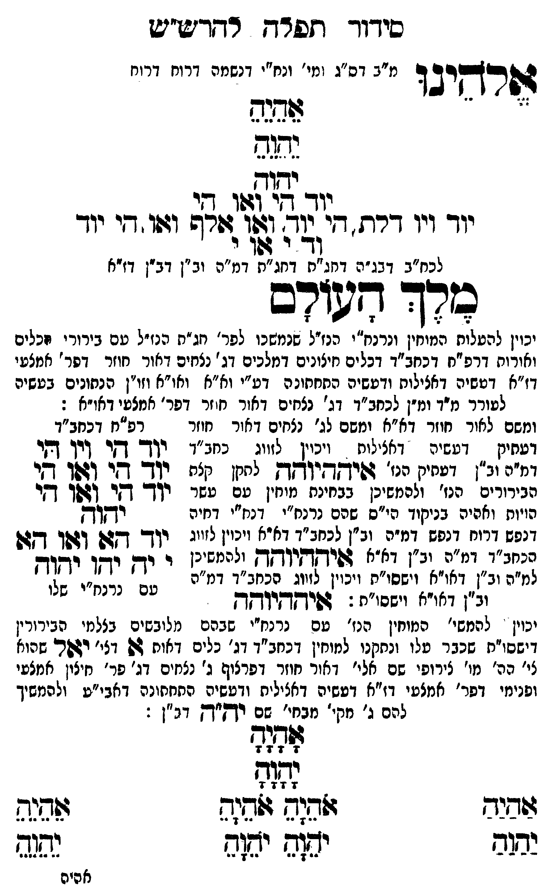

Neue Klartextfassung
אלהינו [מ"ב דס"ג ומי' ונח"י דנשמה דרוח דרוח] אֵהֵיֵהֵ יֵהֵוֵהֵ יהוה יוד הי ואו הי יוד ויו דלת הי יוד ואו אלף ואו הי יוד וד י או י [לכח"ב דבג"ה דחג"ת דחג"ת דמ"ה וב"ן דב"ן דז"א] מלך העולם [יכוין להעלות המוחין ונרנח"י הנז"ל שנמשכו לפר' חג"ת הנז"ל עם בירורי הכלים והאורות דרפ"ח דכחב"ד דכלים חיצונים דמלכים דג' נצחים דאור חוזר דפר' אמצעי דז"א דעשיה דכללות ורביעיה התחתונה דע"י וא"א ואו"א וזו"ן הנתונים בעשיה לעורר מ"ד ומ"ן לכחב"ד דג' נצחים דאור חוזר דפר' אמצעי דאו"א:] [ומשם לאור חוזר דא"א ומשם לג' נצחים דאור חוזר דעתיק דעשיה דכללות ויכוין לזווג כחב"ד דמ"ה וב"ן דעתיק הנז' איההיוהה לתקן כלם הבירורים הנז' ולהמשיכן בבחינת מוחין עם עשר הויות וחלפי' בניקוד כ"ס שהם נרנח"י ורנח"י דחיה דנפש דרוח דנפש דמ"ה וב"ן לכחב"ד דא"א ויכוין לזווג בכחב"ד דמ"ה וב"ן דא"א איההיוהה ולהמשיכן למ"ה וב"ן דאו"א וישסו"ת ויכוין לזווג הכחב"ד דמ"ה וב"ן דאו"א וישסו"ת:] === טבלה === [טור ימין] [טור אמצעי] [טור שמאל] יוד הי ויו הי יוד הי ואו הי יוד הי ואו הי יהוה יוד הא ואו הא י יה יהו יהוה [עם כתר"ו שלו] === סוף טבלה === איההיוהה [יכוין להמשי' המוחין הנז' עם נרנח"י שבהם מלובשים בצלמי הבירורין דישסו"ת שכבר עלו ונתקנו למוחי' דכחב"ד דג' כלים דאות א דג' יאל שהוא לי' הכ' מו' צירופי שם אלי דאור חוזר דפרצוף ג' נצחים דג' פר' חיצון אמצעי ופנימי דפר' אמצעי דז"א דעשיה דכללות ורביעיה התחתונה דאבי"ע ולהמשיך להם ג' מקי' מבחי' שם יה"ה דב"ן: [?]] === טבלה === [טור ימין] אַהַיַהַ יַהַוַהַ [טור אמצעי] אָהָיָהָ יָהָוָהָ אֹהֵיָהֵ אֹהֵיָהֵ יֹהֵוָהֵ יֹהֵוָהֵ [טור שמאל] אֵהֵיֵהֵ יֵהֵוֵהֵ === סוף טבלה ===
Original gegen neue OCR · Niqqud für Vergleich ausgeblendet
Original
אלהינו [מ"בK089-001 דס"ג ומי' ונח"י דנשמה דרוח דרוח] אהיה יהוה יהוה יוד הי ואו היK089-002 יוד ויו דלת היK089-003 יוד ואו אלף ואו הי יוד וד י או י [לכח"בK089-004 דבג"ה דחג"תK089-005 דחג"ת דמ"ה וב"ן דב"ן דז"א] מלך העולם [יכוין להעלותK089-006 המוחין ונרנח"י הנז"ל שנמשכוK089-007 לפר' חג"ת הנז"ל עם בירורי הכלים והאורותK089-008 דרפ"ח דכחב"ד דכלים חיצונים דמלכים דג'K089-009 נצחים דאור חוזר דפר' אמצעי דז"א דעשיה דכללות ורביעיה התחתונהK089-010 דע"י וא"א ואו"א וזו"ן הנתונים בעשיה לעוררK089-011 מ"ד ומ"ן לכחב"ד דג' נצחים דאור חוזרK089-012 דפר' אמצעי דא"א:] [ומשםK089-013 לאור חוזר דא"א ומשם לג' נצחים דאור חוזר דעתיקK089-014 דעשיה דכללות ויכויןK089-015 לזווג כחב"ד דמ"הK089-016 וב"ן דעתיקK089-017 הנז' איההיוהה לתקן כלםK089-018 הבירורים הנז' ולהמשיכן בבחינת מוחין עם עשר ∅K089-019 הויות וחלפי'K089-020 בניקוד כ"סK089-021 שהם נרנח"י ורנח"יK089-022 דחיה ∅K089-023 דנפש דרוח דנפש דמ"ה וב"ן לכחב"ד דא"א ויכוין לזווג בכחב"ד דמ"הK089-024 וב"ן דא"א איההיוהה ולהמשיכן למ"הK089-025 וב"ן דאו"א וישסו"ת ויכוין לזווג הכחב"ד דמ"הK089-026 וב"ן דאו"א וישסו"ת:] === טבלה === [טור ימין] [טור אמצעי] [טור שמאל] יוד הי ויו הי יוד הי ואו הי יוד הי ואו הי יהוה יוד הא ואו הא י יה יהו יהוה [עם כתר"ו שלו] === סוף טבלה === איההיוהה [יכויןK089-027 להמשי' המוחין הנז' עםK089-028 נרנח"י שבהם מלובשים בצלמי הבירורין דישסו"ת שכבר עלו ונתקנו למוחי'K089-029 דכחב"ד דג'K089-030 כלים דאות א דג' יאלK089-031 שהוא לי' הכ'K089-032 מו' צירופי שם אליK089-033 דאור חוזר דפרצוף ג' נצחיםK089-034 דג' פר' חיצון אמצעי ופנימי דפר' אמצעיK089-035 דז"א דעשיה דכללות ורביעיה התחתונהK089-036 דאבי"ע ולהמשיך להם ג' מקי' מבחי' שם יה"ה דב"ן: ] === טבלה === [טור ימין] אהיה יהוה [טור אמצעי] אהיה יהוה אהיה אהיה יהוה יהוה [טור שמאל] אהיה יהוה === סוף טבלה ===K089-037
OCR · fehlbar
סידוך דזפד-ץ ד-דד"ע"יש דל[רקי2 ד מ"בK089-001 דס"ג ומי' ונח"י דנשמה דרוח דרוח נדגש ישה נוד דל (4וו בנK089-002 יוד ויו דרח די שצ ל[ו).זזדף וז:ו דיK089-003 יוד (ד ג גז.: לכח"בK089-004 דבג"ה דחג"חK089-005 דחג"ת דמ"ה וב"ן דב"ן דז"א כרך דטודב 7 70 ל 7 יכוין להטלוחK089-006 המוחין ונרנח"י הנזיל שנמשבוK089-007 לפר' חג"ת הנז"ל עם בירורי זכלים ואורוחK089-008 דרפ"ח דכחב"ד דכלים חיצונים דמלכים דג 'K089-009 נצחים דאור חוזר דפר' אמצעי דז"א דטשיה דאצילוח ודעשיה התחתונ הK089-010 דע"י וא"א ואו"א וזו"ן הנתונים בעשיה לטוררK089-011 מ"ד ומ"ן לכחב"ד דג' נצחים דאור חזרK089-012 דפר' אמצטי דאו"א : ומשםK089-013 לאור חוזר דא"א ומשם לג' נצחים דאור חוזר רפ"ח דכחב"ד ועחינן -K089-014 דעשיה דאצילות ויכוןK089-015 לזווג כחג"' יןך- דקי דיך קי ומ"חK089-016 וב"ן ולחי.K089-017 הנז' גפישדיואק לחקן ק"ת (ש[- בו 1161 בדK089-018 הבירורים הנז' ולהמשיכן בבחינת מוחין עם עשר יך- דזו ךגשך דזיK089-019 הויות ואהיהK089-020 בניקוד הי"סK089-021 שהם נרנח"י דנח"יK089-022 דחיה שבלשב]K089-023 דנפש דרוח דנפש דמ"ה (ב"] לבחב [ [א9ל וינין לזייג יןךך- [גש (זן 2 [לאאאK089-024 וב"ן דא"א שפיךקךקי"ך ק (ליגג ש י יךן ישן זאוח למ"רK089-025 וב"ן דאו"א וישסו"ת ויכוין לזווג ע72 וי"י שב ' נלנ". ולןK089-026 וב"ן דאו"א וישסו"ת : 4פיךקךסי"ך ח יכויןK089-027 להמשי' המוחין הנז' טםK089-028 נרנח"י שבהם מלובשים בצלמי הבירורין דישסו"ת שכבר טלו ונחקנו למוחיןK089-029 דכחב"ד דנ'K089-030 כלים דאוח גש וצי' ישרK089-031 שהוא צי' הה'K089-032 מו' צירופי שם אלי'K089-033 דאור חוזר דפרצוף ג' נצנזיםK089-034 דג' פר' חיצון אמצעי ופנימי דפר' אמצטיK089-035 דז"א דטשיה דאציליח ודטשיה התחחונהK089-036 דאבי"ע ולהמשיך להם ג' מקי' מבחי' שם יךקי"ךק דג"ן : ללפלת 7 14 7 4 נבא ז 7 7 ל שיב זדגש זלחה ששנד לש יש( יש(ס נפג אה"הK089-037